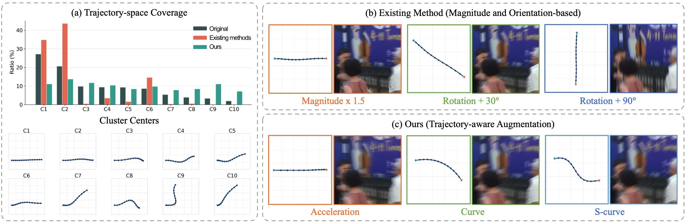

M.S. Candidate in Electrical Engineering
Deep Image Processing Lab
Trajectory-aware Differentiable Blur Augmentation for Image Deblurring
A trajectory-aware reblur and augmentation framework that models global camera motion and spatially varying local object motion. Learnable trajectory perturbations are optimized through the deblurring objective to generate challenging but controlled training samples.
- Designed compact global–local motion representations and differentiable blur synthesis.
- Built the end-to-end training pipeline with mixed precision and distributed training.
- Evaluated limited-data generalization on GoPro and HIDE across deblurring settings.
+2.45 dBGoPro 10% vs. baseline
31.37 dBGoPro 10% PSNR
28.98 dBHIDE, 10% training
